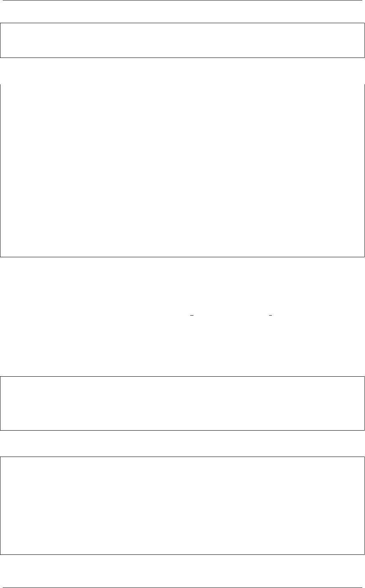

《Python Cookbook》第三版, Release 2.0.0
@logged(logging.CRITICAL, 'example')
def spam():
print('Spam!')
下面是交互环境下的使用例子：
>>> import logging
>>> logging.basicConfig(level=logging.DEBUG)
>>> add(2,3)
DEBUG:__main__:add
5
>>> # Change the log message
>>> add.set_message('Add called')
>>> add(2,3)
DEBUG:__main__:Add called
5
>>> # Change the log level
>>> add.set_level(logging.WARNING)
>>> add(2,3)
WARNING:__main__:Add called
5
>>>
11.5.3 讨论
这一小节的关键点在于访问函数 (如set message() 和set level() )，它们被作
为属性赋给包装器。每个访问函数允许使用 nonlocal 来修改函数内部的变量。
还有一个令人吃惊的地方是访问函数会在多层装饰器间传播 (如果你的装饰器都使
用了 @functools.wraps 注解)。例如，假设你引入另外一个装饰器，比如 9.2 小节中
的@timethis ，像下面这样：
@timethis
@logged(logging.DEBUG)
def countdown(n):
while n>0:
n-= 1
你会发现访问函数依旧有效：
>>> countdown(10000000)
DEBUG:__main__:countdown
countdown 0.8198461532592773
>>> countdown.set_level(logging.WARNING)
>>> countdown.set_message("Counting down to zero")
>>> countdown(10000000)
WARNING:__main__:Counting down to zero
countdown 0.8225970268249512
>>>
你还会发现即使装饰器像下面这样以相反的方向排放，效果也是一样的：
11.5. 9.5 可自定义属性的装饰器 309